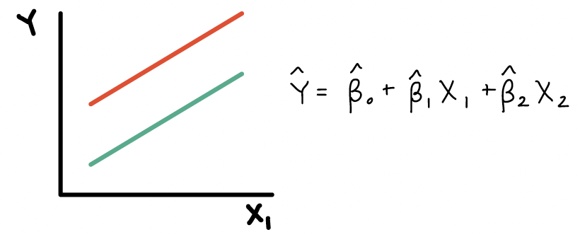
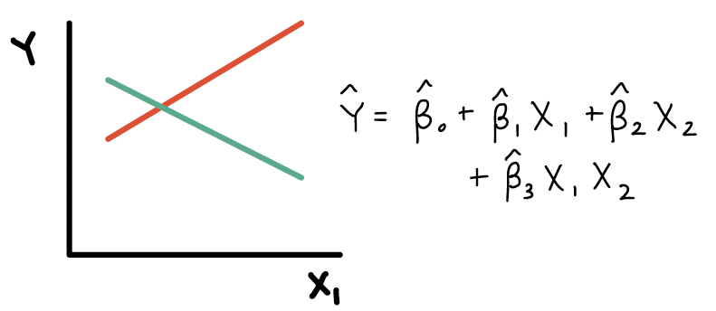
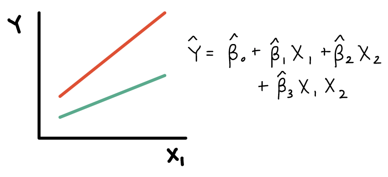
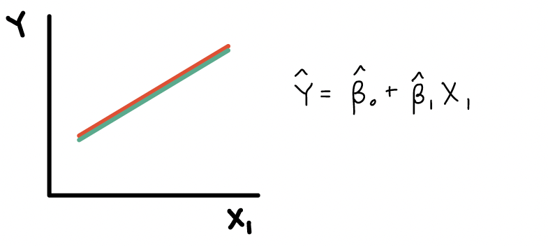

Muddy Points
Lesson 11: Interactions, Part 1
Muddy Points from Winter 2025
Muddy Points from Winter 2024
1. Can we use continuous covariates in an interaction model?
Yes! Here are the four types of interactions we’ll discuss:
binary categorical and continuous
multi-level categorical and continuous
binary categorical and multi-level categorical
continuous and continuous
2. Synergerism vs. antagonism: how does \(\beta_3\) relate to each?
Synergerism means the sign of interaction’s coefficient (\(\beta_3\)) matches that of main effect of \(X_1\), so the effect of \(X_1\) is strengthened as \(X_2\) increases
In the case that we’re looking at \(X_2\) as an effect modifier of \(X_1\)
It’s a little hard to think about this when we’ve only discussed \(X_2\) as a binary covariate, but our “increase” for an indicator is going from 0 to 1.
Antagonism means the sign of interaction’s coefficient (\(\beta_3\)) is flipped from that of main effect of \(X_1\), so the effect of \(X_1\) is weakened as \(X_2\) increases
In the case that we’re looking at \(X_2\) as an effect modifier of \(X_1\)
It’s a little hard to think about this when we’ve only discussed \(X_2\) as a binary covariate, but our “increase” for an indicator is going from 0 to 1
3. The red and green lines example. I’m not totally sure why the lines would be parallel if an interaction affects the slope of a line?
The lines should not be parallel if there is an interaction. Let me show the equation for each of those examples:
Here is the plot and equation when \(X_2\) is a confounder:

Here is the plot and equation when \(X_2\) is an effect modifier:

Here is the plot and equation when \(X_2\) is a effect modifier:

Here is the plot and equation when \(X_2\) should not be in the model:
